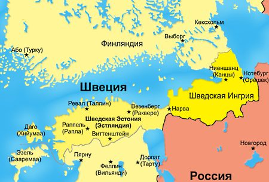

Андрей Борцов (Warrax)
Позиция-3: против «уменьшителей», за Русскую Империю
Белковский: Не надо трястись над территориальной целостностью РФ
Крылов: По тому же месту
Vadimb за идеи ингерманланцев
Крылов, 17 ответов
Агитируя за развал страны, Белковский от Кавказа перешел к Уралу и Сибири
Кургинян о националистах и псевдонационалистах
Мы — не Восток и не Запад, мы — Север
Сакральность
Приложение: И. Маслов (Massell), Открытое письмо русским националистам
***
Тема «у России большая территория, можно и продать кусок, если выгодно; главное — нация, а не территория» периодически пропагандируется. Точно так же продвигается другой вариант расчленения России — разделение на «руспублики». Вот, скажем, Широпаев и «Национал-демократический альянс»: «Нам видятся в составе РФ семь русских республик. Их региональная разверстка: Дальний Восток, Сибирь, Урал, Поволжье, Центральная Россия, Южная Россия, Русский Север». Помнится, именно о семи «русских республиках» в свое время что-то такое говорил Ельцин…
Что меня всегда удручает — так это необходимость разжевывать очевидное.
Возьмем, к примеру, национализм. Да любой деревенский алкаш с ходу скажет, что «это вот — русский, кажись, а вот этот нет». И при этом он понимает, что не всегда можно сказать со 100% точностью, но это и не важно — сколько их таких, «сомнительной этничности»? Полукровка вполне может быть «своим парнем», но русским его это не делает.
А вот прекраснодушный интеллигент будет рассуждать: «да-с, сложный вопрос — можно ли назвать русским негра, если он воспитан в русской культуре? а как быть с великим русским поэтом Мандельштамом?».
Или, скажем, русская нация — точно есть, скажет любой работяга, и удивится, что за вопрос-то. Кто в России-то живет? При этом он очень вряд ли сможет сформулировать, что нация — это высшая стадия развития этноса, на которой он образует государство. А вот квазифилософ-софоложец будет растекаться мысью по древу на тему «нет еще русской нации, быдло-с только, надо бы эту русскую нацию создать, я сейчас распишу, какими должны быть русские…».
Ровно то же — с патриотизмом. «Хоть умри, а со своей земли не сходи» — казалось бы, давно сказано. С учетом «территориальности национализма», присущего русским, тем более — русские даже диаспор не образуют в других странах, в отличие от большинства этносов, ассимилируются.
Спроси обычного русского «естественного националиста» на тему «за сколько можно продать кусочек страны?» — так он и пошлет по-русски, далеко и красиво. Вероятно, рассуждения «стоило ли продавать Аляску, раз не было возможности ее удержать», он не потянет. Но вот сейчас русские категорически возражают против отдачи Курил Японии, не менее резко не одобрили передачу Китаю нескольких спорных квадратных километров островов и т.д.
Есть такие ситуации, когда нет места торговле, выгоде и т.п. ПОДОБНЫЙ ВОПРОС ДАЖЕ НЕ СТАВИТСЯ. Даже у зэков мать — это святое. Вопрос «за сколько вы готовы продать родную мать?» может поставить только психический калека.
Важно: я говорю именно о психике, а не о морали. Родители бывают разные; иную мать дети вполне заслуженно могут и убить. Но: убить, а не продать — так понятно?
Это — область не ratio, а сакрального, трансцендентального.
Но сначала давайте немного «сходим в зоопарк»: почитаем откровения торговцев нашей Родиной — именно нашей. Тот, кто готов торговать «кусочками Родины» — Родины не имеет, максимум — формальное гражданство.
«Насчет всяких национал-демократов и прочих радетелей за отделение всего и вся от России. Это какими надо быть дебилами, чтобы верить, что у маленькой страны будет больше возможностей для развития и процветания, чем у большой страны» © ross_grifon
ВСЁ.
Я, опять же, не понимаю, что тут еще добавить-то? Очевидно, а при желании и доказывается, на фактах.
Но вражеская агитация имеет место, и поэтому тут же ross_grifon вынужден пояснить:
«Под развитием и процветанием я не "стосортовколбасы" на витрине имею в виду. А, в первую очередь, безопасность (военная, продовольственная и т.п.) и способность реализовывать большие проекты (космос, связь, армия и т.п.)».
А ведь для некоторых развитие — это и есть Сто Сортов Колбасы. Красивой такой — с красителями, с консервантами… Чтобы лежала на прилавках и не портилась подольше. Но не будем отвлекаться, давайте посмотрим примеры отношения к территории страны.
На статью Крылова «Земля наша велика и обильна» я указывал ранее. Сейчас же посмотрим прошлогоднюю (28/06/2010) статью Белковского, хозяина «АПН» и работодателя Крылова.
Станислав Белковский, «Не надо трястись над территориальной целостностью РФ» (какое говорящее название!).
«— Скажите, Станислав, вы хотите развала России, в чем вас нередко обвиняют оппоненты?
— Да. Я, безусловно, хочу, чтобы Северный Кавказ, по крайней мере, мусульманские его регионы, покинули состав России. … Сначала нужно перекрыть им федеральное финансирование. Это обессмыслит их присутствие в составе РФ, поскольку оно является главным и единственным мотивом их пребывания в России. После этого создается международная рабочая группа под председательством какого-нибудь мощного экс-президента США…»
Думаю, любой русский сугубо за то, чтобы прекратилась «традиция» кормить за русский счет национальные окраины — это имело место и в СССР, и в царской России. И продолжается сейчас. Но вот «под председательством экс-президента США»?! Даже не стесняется выдать заказчика. Мол, давайте поделим Россию под руководством США!
Ну и далее:
«Я считаю, что не надо трястись над территориальной целостностью РФ. Поскольку после 1991 года историческая Россия потеряла свои самые что ни на есть исконные и органически присущие ей территории в виде Восточной и Южной Украины и Белоруссии, говорить о том, что мы не можем лишиться маленького клочка земли — это смешно».
Обратили внимание на игру смыслами? Мол, «не можем» — ерунда какая, можем!
Можем, ага. А оно нам надо?!
Потрясающая «логика»: мол, мы потеряли много, так можно еще потерять — жалко, что ли? При этом речь идет не просто о материальных ценностях, а именно о «естественно своем». Аналогия: в результате катастрофы у вас ампутировали несколько пальцев; после этого — что, вам еще фалангу-другую жалко?
«— Вам не кажется, что после отделения Чечни и Дагестана независимости захотят поволжские республики — Татарстан с Башкортостаном?
— Это зависит от того, насколько они будут заинтересованы в нахождении в составе России.
— Допустим, не будут. Их надо тоже отпустить?
— Я считаю, что если существует регион со сформировавшейся национально-культурной идентичностью и он хочет выйти из состава страны (как, например, Каталония или Страна басков в Испании), то это рано или поздно произойдет».
Мелкобуржуазные сепаратисты редко говорят так откровенно. Обычно возражают: мол, отделение одних регионов не будет способствовать сепаратическим тенденциям других. «Аргумент» у них единственный: «этого не может быть!». Что Советский Союз могли развалить (вопреки результатам референдума к тому же) — тоже в свое время мало кто мог представить, ага…
А тут четко все: если будут не заинтересованы, то уйдут, и их надо отпустить. А какая может быть заинтересованность? Уж не дотации ли из федерального бюджета, т.е. за счет русских?
«Над нами довлеет комплекс территории, который нужно изжить» — откровенничает Белковский. И, что тоже показательно, речь у него идет лишь о формальном отделении территорий. А толку? Вот Грузия отделилась, а грузинские воры в апельсиновом законе перебрались в РФ, бригады барсеточников ездят на гастроли, а уж типа законный бизнес грузины в РФ могут вести вообще без проблем, русское гражданство у них тоже осталось и т.д.
Хоть какой-то смысл отделение территорий имеет лишь вкупе с отделением заодно и соотв. этноса. Но если на это есть воля и ресурсы — то можно и так порядок навести, без отделения (в какой раз уже повторяю…).
Крылов: По тому же месту
Цитирую целиком.
«Мне всегда было непонятно, почему наши «имперцы-государственники», когда им говорят, что территориальная целостность государства является меньшей ценностью, чем свобода и благополучие русского народа, немедленно начинают орать, что «эти гады хотят развалить Россию на сто частей и отдать её НАТО». Откуда такой странный вывод?
А ведь объяснение-то очень простое. Арифметическое.
Допустим, вам говорят, что вот этот особняк очень дорого стоит, но всё же его ценность всё-таки ниже, чем, скажем, жизнь старухи или маленького ребёнка. Современный европеец, услышав это, не удивится: с его точки зрения жизнь человека вообще очень ценна, а жизнь стариков, женщин и детей — это вообще святое. И если особняк загорится, он будет спасать старуху и ребёнка, а не «мебеля», пусть даже антикварные. За мебеля он в огонь не полезет, а ребёнка из огня вытащить, пожалуй, рискнёт.
Но, допустим, мы говорим африканскому рабовладельцу, что здание, где он держит рабов, стоит дешевле, чем жизнь старухи-рабыни или рождённого рабыней младенца. Он поймёт это так, что речь идёт о совсем уж непотребной развалюхе, опасной для проживания, которую нужно как можно скорее сломать. Потому что с его точки зрения ребёнок стоит гроши, его даже на базаре толком не продашь. А старуха — вообще лишний рот, обуза, цена её жизни даже не нуль, а ниже, «и очень жаль, что наш добрый султан набрался у белых странных идей и запретил убивать старых рабынь». И здание не может стоить МЕНЬШЕ, чем жизнь старухи, потому что её жизнь стоит меньше чем ничего. Значит, это развалюха, которая вот-вот завалится. И если она вдруг завалится, он полезет в неё не чтобы спасти старуху или младенчика, а чтобы успеть вытащить какую-нибудь ценную хозяйственную вещь, которая денег стоит.
И дело не в том, что он злой и плохой. Он может быть прекрасным человеком. Просто для него ценность раба равна ценности труда раба минус харчи. Никакой другой ценности раб не имеет. Если раб не работает, а ест — его ценность даже не нуль, а ниже нуля.
Так вот. Имперцы-государственники — это несостоявшееся советско-россиянское начальство, и мыслят они, как мыслит советское-россиянское начальство. То есть они ценят русский народ ТОЛЬКО как рабочую силу, и больше никак. Поэтому ценность свободы и благополучия русского народа для них равна нулю. Нет, даже НИЖЕ нуля, потому что если народишко зажрётся и получит какие-то права, он разленится и возомнит о себе, то есть будет хуже работать. А ведь вся ценность русских для имперцев состоит именно в том, что они неприхотливые и безропотные, «работают и не пищат». Нет, конечно, русских надо кормить и лечить, чтобы они не протянули ноги. Но каждый кусок хлеба, который съедает русский — это же не доход, а расход, понимаете? И желание, чтобы русский ел не меньше, а больше, причём не для того, чтобы больше трудиться, а так, «для себя» — это для имперца просто бесхозяйственность, причём бредовая какая-то бесхозяйственность, всё равно что корову пирожными кормить. Точно так же и какие-то «права русских» — ведь это мешает использовать русских в хозяйстве. Человека, у которого есть права, по заражённой радиацией местности не погоняешь, интернациональный долг им не исполнишь, и даже на картошку не отправишь. С ним надо цацкаться, платить ему что-то, он ещё и кочевряжиться начнёт… Вы что, лишних проблем в хозяйстве хотите? Вы совсем сдурели?
Естественно, имперцы этого не говорят и даже не думают. Они так чувствуют. Это для них ЕСТЕСТВЕННАЯ точка зрения, «как же иначе».
И если имперцу сказать, что Государственность и Территориальная Целостность стоит меньше, чем такие абсолютно неценные и даже ВРЕДНЫЕ вещи, как благополучие и права русского народа, он сделает из ваших слов единственно логичный вывод: значит, для вас единство русской земли не просто ничего не стоит, а вы его смертельные враги. Потому что, повторяю, русское благополучие для имперца-государственника — это лишние расходы, а русские права — это лишние проблемы. А что может быть хуже расходов и проблем? Да только то, что вы ненавидите и стремитесь уничтожить. Вот и получается: вы ненавидите государственность и стремитесь уничтожить единство страны!
Националисты всё это слушают с кротким удивлением, потому что для них благополучие и права русского народа — это ценность, во-первых, положительная, и, во-вторых, очень большая, почти предельно большая. Ценнее только само существование народа, и то с оговорками: мы все очень ценим свою жизнь, однако вряд ли кто-нибудь согласился бы даже на вечную жизнь в вечных муках, и к народам это тоже относится… Так что утверждение «благополучие и свобода русских важнее и ценнее государственности и территориальной целостности» для них — просто банальность, причём из этой банальности не следует, что это вещь не ценная. Мерседес не стоит человеческой жизни, оторванное зеркало или поцарапанное крыло не стоят увечья или смерти какого-нибудь старичка с палочкой, замешкавшегося посреди дороги. Но из этого никак не следует, что это не дорогая машина, а барахло, которое ничего не стоит. «Это же так ясно».
Но имперцы-государственники в принципе не могут не смотреть на русских как на «трудовой ресурс», который ценен только трудоспособность. Русские нужны ДЛЯ обеспечения величия и могущества государства, иначе зачем они нужны? Для них, повторяю, каждый кусок, который съедает русский — расход. Который иногда можно обосновать: «если совсем не кормить, протянут ноги», эту логику они понимают. Они даже готовы поспорить по этому поводу с либералами, которые намерены русских уморить бескормицей. Но всё равно — это именно РАСХОД. Точно так же, русские права — это «геморрой начальству». Хотя, опять же, право любого мелкого начальника истреблять русских пачками они тоже не одобрят — «этак какой-нибудь дурак весь трудресурс изведёт по пьяни». Такую логику они опять же понимают, «укорот должон быть». Но укорот укоротом, а само право начальства распоряжаться трудресурсом абсолютно самоочевидно. Лошадь нужна, чтоб ездить, корова — чтоб молоко, русский — чтоб гробиться. Как иначе-то? И, ясен пень, те, которые говорят, что корову нужно кормить просто так, да ещё и вкусным сеном и до отвала, даже если от неё молока нет, тот дурак просто и не понимает совершенно очевидных вещей. Ну а которые ещё и добавляют, что желание коровы пастись на зелёной лужайке, а не стоять в стойле, надо удовлетворить — это просто психбольные, идиоты какие-то, ну или враги, потому что чем ещё можно объяснить такой кретинизм?
И ничего тут не поделаешь. Ну не можем мы объяснить имперцам, что русские — это люди, а не «трудресурс». Выпучат буркала и забубукают: «не, вы что, сдурели? вы, верно, хотите Россию разорить, разломать и пустить на запчасти? Не дадим, навалимся!»
Так что непонимание тут абсолютно фундаментальное. Онтологическое».
Согласен — отличие именно онтологическое. Но — отнюдь не в той плоскости. Приведу еще аналогию, несколько с другой стороны.
Если вы уже потеряли руку благодаря чьим-то действиям (авария, скажем) — можно обсуждать тему «какая компенсация будет достаточной». Но вот если рука еще при вас, то обсуждение «за сколько вы согласитесь, чтобы вам ампутировали руку?» означает либо сумасшествие, либо крайнюю нужду: иначе не выжить. «Нет средств на жизнь, продам почку».
Да, фундаментальное отличие: невозможно представить, чтобы психически здоровый человек согласился причинить себе увечье. А вот с либеральной т.з. — всего лишь товар, «чё такого». Та же проституция — с националистической и социалистической т.з. недопустима, с либеральной же — «тело принадлежит индивиду, что хочет, то пусть с ним и делает».
У либерала нет понятия «Родина», у него есть лишь некая «территория страны», которая воспринимается отдельно от себя — поэтому и аналогия «дом, имущество». У националиста же Родина психологически неотделима от Рода, а Род — от индивида. Все составляет одну систему.
В истории известна лишь одна нация, которая долго существовала без Родины — евреи. Но и они, как только смогли, организовали свою собственную страну.
Есть такой хороший прием для оценки идеологий и т.п. — утрируем и смотрим, что выйдет. Если не очень приятно, но жизнеспособно теоретически — то идею можно использовать, только надо «подкрутить» так, чтобы было не только жизнеспособно, но и достаточно приятно. А вот если не жизнеспособно при утрировании, то это означает принципиальный дефект идеи.
Утрируем Русскую Империю: всех победили, всех выживших включили в Империю; русские — главные; экспансия в космос, развитие науки, техники; культ Ученых, Мастеров и Воинов… Даже если утрировать до шовинизма (что русским не свойственно), то все равно весьма жизнеспособно.
А если утрировать до «набора русских улусов», «руспублик»? Получатся мелкотравчатые «государства», которые неизбежно — и очень быстро! — станут территориями мирового глобализма. Третьесортными причем. С компрадорским правительством и всем остальным прилагающимся. Кредиты МВФ с их требованиями, вступление в ВТО… Уничтожение какой-либо самостоятельности; короче говоря: глобализму может противостоять лишь держава мирового уровня. У «руспублик» не будет никакой мотивации объединяться: «элиты» будут стремиться продаться подороже Западу, вот и все. Что, сейчас Украина стремится объединиться с РФ? (Белоруссия — тоже не стремится, но по другой причине; вот РФ к Белоруссии присоединить бы…).
Дробление России = уничтожение державы, уничтожение русской нации, низведение ее на уровень этноса. И даже этносы будут выделять типа разные: мол, казаки, сибиряки, «ингерманландцы» — это такие отдельные русские, не совсем русские…
Обратите внимание: у Крылова нет ничего про созидание, прогресс, развитие… исключительно про «права» и «благополучие», мелкобуржуазные ценности. А откуда они возьмутся-то, если деградировать до подчиненных Западу территорий? Что, странам «третьего мира» так шоколадно живется? Вообще-то, как раз за счет них Запад и жирует покамест. И уже очень требуются новые «доноры». «Руспублики», например.
И — тоже важно — в тексте постоянно противопоставляются Империя и национализм. А как быть с концепцией, что это не только одно другому не противоречит, но и неизбежно связано? Россия может развиваться как национальное государство, только лишь обладая имперской мощью — иначе задавят. См. «Нации и идеологии», а здесь процитирую несколько реплик из обсуждения вышеприведенной статьи Крылова.
Ntimarchenk: Мне вот всегда интересно, почему Крылов приписывает людям то, чего они не говорят, а потом обсуждает это самое, приписанное как некую аксиому. С чего он взял, что люди, выступающие за целостное русское государство, не радеют о свободе и благополучии русского народа? Крылову, что, выдали специальную лицензию радетеля за благополучие и свободы русского народа?
Далее какая-то чушь про старух и маленьких детей.
Почему-то Крылов не рассказывает, как он ценит этот самый русский народ сам, а лишь выдумывает, как его ценят «имперцы».
И вообще, человек, который любит рассуждать про уют, комфорт и прочие ништяки цивилизации, вдруг начинает втирать, что дом человеку не должен быть дорог. Что нацдемы хотят оставить миллионы русских людей фактически бездомными, на птичьих правах уже в чужих домах, как это было в постсоветских республиках. Это он так заботится о русском народе? Спекулируя отношением нынешнего оккупационного режима к народу?
Допустим, развалится нынешняя Россия, и в каком-нибудь суверенном пельменестане останутся русские, будет ли о них заботиться Крылов? Вспомнит хоть про одну старушку и маленького ребенка, когда их местные баи будут унижать и лишать свобод и благополучия? Думаю, он про них и знать не захочет. Что он знает о судьбе тех, кто бежал в Россию из Средней Азии, Закавказья и т.д. Об их благополучии и свободах? Да ничего. Ему плевать.
Мне почему-то вспоминается сказка про то, как из одной шкуры мужик пытается сшить несколько шапок. Вот так и тут — для одного народа, для одной головы нацдемы пытаются сделать несколько шапок. Которые и не наденешь на эту голову толком и греть они не будут. И шкуру назад уже не восстановишь.
Darkhon: Очень хорошая аллегория!
А причина проста: нацдемы НЕ воспринимают Россию как Родину. Это типа «просто дом», который и поломать можно, и продать, и переехать жить в другое место.
Плюс -- это именно дом для жилья и не более. Если «особняк загорится» -- это одно дело, а если завод, который выпускает танки/самолеты, да еще во время войны?
Рассуждения идет отчетливо не на государственном/национальном уровне, а на уровне обывателя, который просто хочет жить в хате с краю и потреблять побольше, требуя сто сортов колбасы вместо ракет.
the_third_way: Пытаясь опровергнуть простые доводы Крылова, Вы постоянно съезжаете в маргинальные, ненормальные ситуации. Война и военная жизнь и «ракеты» — это ненормальное состояние. Мир — нормальное. У Крылова речь идет о жизни не о войне, когда все по-другому, а об обычной жизни. Не нужно на обычную жизнь переносить правила и устои военного времени. Уже нахлебались. Хватит.
Darkhon: Гы. Можно подумать, что «холодная война» кончилась и никогда не будет горячей. Этого не может быть типа :-)
Да и прогресс — это, образно говоря, война с природой.
Крылов — это бунт обывателя против сверхчеловека, образно говоря.
Antimarchenk: Не слишком ли простоваты доводы Крылова? Уж какая-то это слишком уж простота для столь непростого человека. «Имперцы», значит, видят русских рабами, а он вот — единственный глашатай свободы. Но только он не видит почему-то тех, кого планы нацдемов могут сделать реальными рабами.
Их маленькие республики будут зависимыми государствами от кредитов МВФ и будут делать то, что им скажут. И мультикультурализм, и толерантность и политкорректность будут блюсти. Потому что им НАТО и другим соседям нечего просто будет противопоставить, кроме «простых доводов» Крылова.
the_third_way: Крылов не разделяет идей широпаевцев. Мы уже обсуждали, что «нацдемы» и национал-демократы — это разные вещи.
Antimarchenk: А где можно почитать, как он их не разделяет? «Имперцы» тоже не все в одной кадушке плещутся. Но их почему-то под одну гребенку Крылов чешет.
Vadimb за идеи ингерманланцев
Еще один пример: vadimb позиционирует себя как русского националиста, ведет тематический блог. При этом пишет: «Еще пара поселков, безнаказанно расстрелянных кавказцами, еще несколько дел за экстремизм и все. Образованный, любящий свой город петербуржец остановится и скажет, а какого собственно черта?! Европейское государство. Мировой логистический центр, евросоюз и пошли они, эти многонациональные амбиции кремля».
Это толстый намек на «Инргерманландию» — см. карту. Мол, можно и отделиться от России, проблема-то. Причем заявляется, что так захотят поступить именно что образованные, любящие свой город и т.д. Интересно-то так: город свой, значит, любят — а Россию нет? Речь-то идет не о наведении порядка (хотя бы в своем городе), а именно об отделении.
Второй толстый нюанс: ориентация на Европу. Мол, там точно лучше, пойдем в Цивилизованное Общество. Дело не столько в отрыве от действительности (что, Прибалтике лучше стало, когда отделилась?), сколько именно в нерусскости: русские всегда стояли за свою землю, а вот перебежать на другую сторону — не припоминается что-то. Не было в истории такого, чтобы некие русские заявили бы «мы не хотим быть в России». Скажем, западные украинцы прежде всего отказались быть русскими, а уже потом заговорили о «самостийности». Даже Власов и ему подобные — воевали на стороне врага, но именно что за «изменение положение в России», а не за «отделение себя от России».
Любой сепаратизм, любое стремление к уменьшению территории России, призывы к ослаблению государственности — это поведение сугубо антирусское даже по менталитету, а не по последствиям. «Чужие среди нас».
Некогда П.Данилин решил задать несколько «сложных» вопросов националистам, всего 17 штук. На эти вопросы ответил А. Севастьянов, М. Диунов и многие другие. В том числе — и Крылов. Разбирать их подробно не будем, со многим я согласен, но кое-что процитирую:
«Для националиста государство и даже страна — при всей их несомненной ценности — все же не так важны, как само существование и процветание его народа. Государство — это всего лишь машина управления, а страна — место жительства. Конечно, важно иметь свой дом и участок, и нужно сражаться за каждый сарай. Но если мы все умрем, защищая сарай, то в твой дом вселится кто-то другой. Дом, конечно, останется, и, может быть, к нему что-нибудь пристроят — но нам от этого легче не будет. Не будет нам хорошо и в том случае, если из этого дома сделают для нас тюрьму. Сидя в сыром подвале на цепи, трудно восхищаться красотой двускатной крыши и резными наличниками.
И если ценой существования государства под названием «Российская Федерация» в ее нынешних границах является вечное бесправие русского народа, его унижение и эксплуатация властями и инородцами, а в перспективе вымирание — в таком случае лучше всё что угодно, чем такое государство».
Очень показательно.
И в мыслях нет русского «со своей земли умри — но не сходи», «мертвые сраму не имут» и т.д. Нет понятия о достоинстве, чести — мол, если то, так можно и сдаться, отдать «сарай» оккупантам, а самому… Гм, а ничего другого не остается — либо к оккупанту в услужение, либо куда-то еще уехать, но Родины больше нет и не будет. И, мол, фигня какая, зато жив остался!
Позиция индивида, который понятие «Родина» разве что в словаре читал, без осмысления. Мол, где живется получше материально — там и «родина».
Что же касается «сырого подвала» — все верно, сидели при татаро-монгольском иге. Затем нас пытался засунуть туда Гитлер, сначала даже получалось. Но в результате-то дом вернули. Потому что не считали захваченное «уже не своим». А вот если сдать добровольно…
Ну и, тоже показательно, такое якобы незаметное передергивание с антирусского правительства на государство целиком, на Россию.
Цитирую далее, как раз показано, для чего так сделано:
«реальный федерализм, права русских регионов — это важная часть национального строительства. Нет ничего плохого в том, чтобы исторические регионы России пользовались широкой автономией, в том числе и в области экономической. Ситуация, когда средства, заработанные в регионах, вывозятся из них в «центр» — а потом, как правило, и из России вообще — нетерпима. Если что-то и способствует сепаратизму, то именно это. Средства, заработанные русскими людьми на русской земле, должны оставаться на этой земле и идти на ее развитие.
То же касается и административного, и культурно-исторического самоутверждения русских земель. Привычные географические названия — Урал, Сибирь, Дальний Восток — должны наполниться политическим содержанием».
Вот уже и нет единой России, есть регионы, которые должны стать политическими единицами, т.е. мини-государствами, как минимум — автономиями. А далее заявляется Всеобщее Счастье и Благорастворение Воздухов, априорно и декларативно. Никакого осмысления вопроса нет в принципе. Подробно вопрос «что и почему будет с такой вот федерацией» разобрал А.Н. Севастьянов в статье «Расчленители», я лишь ткну пальцем в самое очевидное.
Нет ничего плохого в широкой автономии? А что будет, если нападет враг? И стратегические ядерные войска у автономий кишка тонка поддерживать, и даже согласовать действия не реально: кто будет главнокомандующим? Или приказы будут обсуждаться демократически и приниматься голосованием? Помнится, «национал»-либералы в своей программе «НОРНА» что-то такое и заявляли, о народных дружинах на ядерных подлодках.
Средства, заработанные в регионах, в них и остаются? Нетрудно понять, к чему это приведет. Упрощенно: природные богатства — в Сибири, заводы — на Урале. И очень наивно думать — как это пытаются представить сторонники федерализма — что все тут же объединятся и все будет ОК. Если объединяться — то зачем разъединяться-то?
Куда более вероятен вариант, что правителям Сибири Запад сделает предложение, от которого они не смогут отказаться (чтобы отказаться — надо обладать армией мирового уровня, а также — разведкой, контрразведкой и т.д.). В итоге богатства Сибири будут перекачиваться на Запад за мелкий прайс, и жировать будет лишь «элита» «Сибирской Республикой Раздачи Ресурсов», обычным же русским будет, думается, похуже, чем сейчас в РФ. В тех же местах, где заводы есть, а сырья нет — точно ничего хорошего не будет по понятной причине.
Результат: проигрывают ВСЕ русские, кроме узкой прослойки компрадорской буржуазии и политиков-коллаборционистов.
Иллюстративное (27/06/11): «Рабочие группы, которые предложат программу децентрализации власти в России, возглавили вице-премьер Дмитрий Козак и полпред президента в Северо-Кавказском федеральном округе Александр Хлопонин. Соответствующее распоряжение подписал глава государства Дмитрий Медведев. Документ опубликован на сайте Кремля».
Агитируя за развал страны, Белковский от Кавказа перешел к Уралу и Сибири
Статья от 30/06/11:
«…распад нынешней Российской Федерации – процесс практически неизбежный. Об этом политолог заявлял уже неоднократно. …
По словам политолога, новый этап в истории российского государства может начаться с Сибири и Урала. «Мы знаем, что при проведении последней переписи населения уже была введена такая национальность как сибиряк, и многие с удовольствием такую национальность указывали, – заявил Белковский. – Возможно, следует ожидать появления и национальности «уралец».
Станислав Белковский отметил, что Урал вообще сыграл ключевую роль в истории России, причем неоднократно: «Урал и Екатеринбург в частности дали России свободу дважды. Здесь, во-первых, в прямом смысле этого слова было покончено с монархией, ну а принадлежность Бориса Ельцина к Екатеринбургу сомнений не вызывает».
Здесь стоит сказать, что собственно встреча Белковского с екатеринбуржцами была посвящена предстоящей годовщине основания Уральской республики – она была провозглашена 1 июля 1993 года. Впоследствии за это Эдуард Россель поплатился своим постом, а идея умерла – Свердловскую область не уравняли правах с национальными автономиями в составе РФ. По словам политолога, модернизационная и реформаторская деятельность может начинаться как раз с сепаратизма».
Как видите, весь набор: от регионального сепаратизма и до изобретения «национальностей». Да и заявление, что-де Ельцин дал России свободу — весьма говоряще.
Кургинян о националистах и псевдонационалистах
Взято из того же текста, но решил выделить отдельно. На всякий случай: позицию Кургиняна я разберу отдельной статьей — я далеко не со всем согласен. Но именно эта критика — очень верная.
…несколько слов по поводу того, что касается стратегического диалога с националистами и их разделением на национал-либероидов, оранжистов, уменьшительных националистов, националистов-ликвидаторов и нормальных националистов.
Это настолько важный вопрос, что я всё перечислю по пунктам.
Пункт первый. Об отношении к истории.
Если эти господа заявляют (а они заявляют): «долой имперскость», «долой навязанную нам русскую историческую судьбу», «долой нашу историю как проклятие», «долой историческое предназначение» (то есть то, что собирает народ), — то что такие господа говорят по сути?
Что народ этот надо рассыпать. Да или нет? А чем иначе может кончиться проклятие исторической судьбы, кроме как рассыпанием народа, капитуляцией, и оккупацией? Ничем другим.
Вот господин Широпаев обиделся на господина Карпеца, что тот его плохо процитировал. И сказал о том, что выступал за федерализм… Я в таких случаях говорю: с этого момента нельзя ли поподробнее? Какой это федерализм? Что, нужно семь русских республик для того, чтобы русские по-настоящему себя выразили? А почему семь, а не двадцать? Или, может быть, чем их будет больше, тем лучше русские себя выразят? А если каждый уезд будет республикой, так они и совсем хорошо себя выразят?
Но ведь господин Широпаев объясняет, что он имеет в виду. Он сетует на то, что господин Карпец процитировал его не полностью. А он должен был бы руки Карпецу целовать и в ножки кланяться за то, что он его процитировал не полностью. Потому что, когда он цитирует сам себя полностью, – вот тогда-то по-настоящему всё и проясняется.
«…Русский народ весьма велик и весьма многообразен в регионально-субэтническом плане», — говорит он (shiropaev.livejournal.com). Поэтому по всем субэтносам надо строить республики. Всё это субэтносы: Дальний Восток, Сибирь, Урал, Поволжье, Центральная Россия, Южная Россия, русский Север… Это всё субэтносы, которые должны обрести территориальную государственность!
А дальше-то что?
Я уже говорил, что когда-то моё сердце потрясли слова одного из националистов, который очень давно произнёс с трибуны Съезда народных депутатов СССР: «Не упрекай сибиряка, что держит он в кармане нож, ведь он на русского похож, как барс похож на барсука». Я спросил тогда, арестуют ли этого гражданина, выведут ли его в наручниках со съезда? Мне сказали, что у него иммунитет. Я сказал, что этот иммунитет надо снять, иначе русскому народу конец.
Дальше эти субэтносы начнут враждовать. У Сибири ресурсы, в Центральной России их нет. Мы же знаем, что дальше происходит. Происходит развал.
Пункт второй. Этот федерализм в каких условиях будет реализовываться? В условиях системного кризиса, может быть? Он будет реализовываться в условиях краха власти. В других условиях он не может быть реализован. Так вот, в момент этого краха власти займутся не новой властью, а новой государственностью. А, иначе говоря, расчленением страны. Потому что как только этот крах произойдёт… А при существующих процессах он обязательно произойдёт… Я снова и снова подчёркиваю, — существующие тенденции несовместимы с жизнью России. Существующие тенденции преступны. Класс, который обезумел в своей алчности и эти тенденции расширенно воспроизводит, преступен. И не надо говорить, что мы что-то там защищаем из наличествующего… Мы защищаем страну, вне которой русский народ будет уничтожен незамедлительно.
Так что это за федерализм, нельзя ли поподробнее?
Пункт третий. Идёт дискредитация самого принципа империи в XXI веке. Между тем, единственный способ выживания в XXI веке – это создание полюсов силы с численностью населения не менее 500 миллионов. Это рассчитано математически. Кто не знает, — может по этому поводу познакомиться с данными.
Соединённые Штаты Америки хотят объединяться с Канадой и Мексикой... Европейцы создали свой полюс силы... Китай – это вполне полюс силы… Индия – полюс силы... Исламский мир стремится к халифату, потому что стремится создать полюс силы...
И если мы не создаём свой имперский (а иного не может быть) полюс силы, то в какой именно полюс мы интегрируемся? Назовите, пожалуйста. В ком мы растворяемся? В какой именно зад без мыла хотим залезть? Говорите, а не нойте про то, что империя чему-то там мешает. Мы знаем, что мешает плохому танцору...
Пункт четвертый. Полный хаос в том, что касается национализма вообще. Когда национальную идею, идею нации (например, индийской полиэтнической нации и других) очень быстро заменяют субэтнической, то возникает даже не этническая, а субэтническая каша. Понятно, чем это чревато? Это уже не расчленение – это рассыпание в пыль.
(А вот здесь Кургинян категорические не прав, но критиковать я его буду в отдельной статье — W.)
Пункт пятый. Идёт прямой призыв к сепаратизму. Зачитал я этот призыв, да или нет? Что вы отвечаете по этому поводу – конкретно, сухо, на политическом языке, без всякой там хулиганской акробатики?
Якобы мы говорим, что русские должны терпеть любые унижения ради сохранения единства, что должны служить нерусским… Это что за фокусы в духе грязного пиара?.. Вы отвечайте на политические вопросы. Потому что эти вопросы вам задаёт не кто-то конкретно, их вам задаёт жизнь – и надвигающаяся катастрофа. И очень скоро вам нужно будет определить – где вы. В рядах сражающихся или в американском обозе?
Пункт шестой. Идёт восхваление оккупации. Вы слышали это: «…при участии и под давлением внешних сил».
Пункт седьмой. Идёт собирание дурной энергии. Люди справедливо раздражены по поводу того, как ведут себя кавказские (северокавказские, и другие) элитные бандитские группы… Им говорят: «Вы видите, вы видите, как они себя ведут? Вы же недовольны. Идите к нам... А теперь мы вас вместе приведём к разрушению страны…» Вот так собирают дурную энергию… (Потому-то так важно очищение энергии, потому так важно менять её качество)… И бросают на разрушительные цели. Точно так же бросали недовольство номенклатурой на уничтожение Советского Союза и на ту катастрофу, плоды которой мы сейчас пожинаем.
Пункт восьмой. Всегда и во всех случаях люди хотят разрушать страну, используя две разрушительные энергии, — сепаратизм окраин и некий уменьшительный национализм ядра. Так же разрушался Советский Союз, когда Распутин предложил, чтобы РСФСР вышла из состава СССР, а потом Ельцин это и осуществил. Теперь надвигается новый этап того же самого – нужно разрушить русское ядро. Нужно подорвать силы народа-держателя. Нужно его протестную энергию обрушить на его же ликвидацию – вот в чём суть этой подлой затеи.
И, наконец, последний: пункт девятый. Причём тут национал-демократия? Когда и в какой стране мира национал-демократия грезила всякими там федерализмами, которые у нас немедленно превращаются в конфедерализм? Конфедераты, рабовладельцы юга, были демократами? Демократом был Авраам Линкольн, который «мочил в сортире» этих конфедератов на свой американский манер.
Якобинцы были конфедератами? Часть жирондистов, маленькая группа, во время Великой Французской революции пыталась дёрнуться в эту федералистскую сторону… Потом оказалось, что нужно либо снюхиваться с роялистами и ехать в немецко-английском оккупационном обозе, либо гибнуть. И они гибли с честью.
Якобинцы никогда не посягали на целостность страны. Подлинная демократия, если бы она была в России, всегда бы служила целостности страны.
Так вот, вместо демократии – ложная либероидная гниль… А теперь гниль ищет гнили… И ложная псевдонационалистическая гниль ищет другой гнили.
Одним из аргументов «уменьшителей» заявляется «а вот в Европе есть мелкие государства, и ничего». Вот только не могут при этом привести пример какой-либо нации, которая сама стремилась бы разделиться на «федеративные республики» — наоборот, все всегда стремились объединиться «по крови». Кроме того, непонятно, а с чего это стремиться к уменьшению государства? То, что это уменьшает возможности — очевидно, враги как раз всегда стремятся к тому, чтобы «разделять и властвовать».
Я как-то писал статью против устремлений некоторых «объединиться с Европой», и важно не забывать о том, что русские — это европеоиды по расе, но не европейцы по менталитету. Вот хорошая заметка на эту тему, (с) karasius:
«Я, кажись, просек фишку всех драк, безостановочно происходящих между "имперцами" и "антиимперцами". … Дело на самом деле в подходах. Всего их в данном случае два: расовый и цивилизационный. Рас всего три, хотя некоторые отдельно выделяют семитскую, тогда четыре. Цивилизаций грубо можно посчитать шесть штук. Это: европейская, русская, китайская, индийская, латиноамериканская и арабская. Негрил я не беру, там никакой цивилизацией не пахнет. Существование европейской или арабской цивилизации ни у кого никогда сомнений не вызывало, а вот в русскую многие не верят.
Причина тут одна: нас мало. Русских всего 120 миллионов, тогда как остальные цивилизации включают в себя как минимум полмиллиарда человек. Именно поэтому на протяжении сотен лет никто не мог понять, мы вообще Европа или Азия? В мозги людей не укладывалось, что мы имеем достаточно опосредованное отношение и к тому, и к другому. Историки упорно не верили в русскую цивилизацию, она слишком мала, чтобы быть самостоятельной. Но это не так. Тот факт, что мы на протяжении тысячи лет отбивали атаки арабов и европейцев, дал нам право на свой дом и свою землю. Именно поэтому я всегда говорю, что для меня европеец мало отличается от китайца, они оба совершенно чужие русским, только один похож внешне, а другой — нет.
Итого: нас пытаются порвать на куски. …либералы и демократы тащат в Европу, правительство, православные… тащат в Азию. И так было на протяжении всей истории. В результате народная культура и менталитет складывались отдельно и от первых, и от вторых, так как истинно русских политиков можно пересчитать по пальцам одной руки.
В результате на сегодняшний день сложилась странная картина: власть висит в воздухе, не рыпаясь ни туда, ни туда, хотя и заметен азиатский уклон. "Западенцы" сильны и кровожадны, они чувствуют слабость режима и, справедливо его ненавидя, пытаются сделать хоть что-то. "Азиатов" куда больше количественно, но политически их практически нет, православные организации полудохлы и никем не воспринимаемы всерьез, Евразийцы слишком мягкие, они погрязли в теориях и подхватить пыльное знамя Батыя некому. И радует только одно: где-то в центре этой каши и бурелома сейчас уже выкристаллизовываются русские националисты. Их немного, они разобщены, у них нет программы и структуры. Подавляющее большинство не являются православными, отдавая предпочтение экзотическим концептам типа зороастризма, сатанизма или язычества. У них несхожие политические взгляды, хотя 95% считает себя националистами, добавляя после корня национал- какую-либо вторую основу. Эти люди раскиданы по просторам нашей необъятной Родины, иногда они попадаются в ЖЖ.
У этих островков в море темени и хаоса самая сложная задача из всех: понять, что они — единственное спасение России от бесконечного перетягивания каната из мертвого гранита Европы в липкую грязь Азии, выработать общие идеи и организоваться. Многие из этих людей, не понимая своей сути, примыкают то к одному, то к другому направлению, возможно искренне хотя "как лучше", но чувствуют в душе сомнение.
Европейцам и азиатам легче: за их плечами тысячелетняя история межцивилизационной грызни, предательств, войн, катастроф и ужаса. За нашими плечами нет ничего, наши идейные предки не сумели когда-то взять инициативу, а потом было поздно — кривой ятаган лязгнул о фламберг и понеслось...
Но лично я верю, что надо только организоваться, и тогда все остальные идеи померкнут перед Идеей, и лишь вопли боли и ужаса то на немецком, то на монгольском языках будут слабо прорыватся сквозь слитный стальной грохот Русского Марша. И напоследок приведу очень короткое трехстишье, автор которого и сам наверняка не знал, что он написал...
Я слил шаги во мраке трассы
Со грозным маршем Русской расы,
До глаз закованной в броню...»
Сакральность
Помните, с чего начиналась статья? С необходимости разжевывать очевидное…
Почти двадцать страниц цитат и рассуждений — это всего лишь небольшая иллюстрация к «как они мыслят» и «к чему это приведет».
Суть же — в бессознательном, если говорить языком современной психологии, а если более корректно — то в сакральном. Совсем упрощенно: психика не может состоять из одного ratio — это уже не сапиенс, а биоробот. Недаром в Японии, где все очень регламентировано (а сакральность закончилась с последним Императором), количество самоубийц зашкаливает, не говоря уж об извращениях как норме (девичьи ношеные трусики — ходовой товар, к примеру). Также вспомните количество психоаналитиков в США, где тоже типа «все по закону», а идея «всем демократию, и чтобы никто не ушел!» давно перестала быть сакральной. Монетизировалась, так сказать.
Так вот, Юнг в свое время много писал про так называемую трансцендентальную функцию. Здесь не место устраивать ликбез, но если упрощенно и в двух словах, то психика состоит не только из сознательного, но и бессознательного (личного и коллективного). Для того, чтобы психика работала гармонично, нужно не только быть умным (сознательное), но и прорабатывать как бессознательное, так и связь между частями психики. Трансцендентальная функция, образно говоря, и работает «проводником» между сознательным и бессознательным. И работает она через символы (в том смысле, как этот термин трактуется Юнгом).
Кто в курсе — тот понял, о чем я; кто не разбирается в аналитической психологии — то, если интересно, придется изучить самостоятельно. Для обсуждаемого же вопроса важно, что психика без проработанного взаимодействия с бессознательным представляет собой грустное зрелище. Тут даже Фрейда достаточно — вытеснение, компенсация, гиперкомпенсация, прочие психологические защиты.
Бессознательное — на то оно и бессознательное — оперирует не абстракциями, не аналитикой и даже не образами, а символами. И если этого взаимодействия нет, если оно перекорежено и т.д. — то говорить о гармоничности психики не приходится. При этом соотношение между сознательным и бессознательным можно представить как айсберг: снаружи только малая часть (сознательное). Ничего нового я здесь не говорю, вполне общие положения психологии.
Таким образом, психика без цельного бессознательного — на глиняных ногах, и даже не колосс. Так, куст без корней — перекати-поле, которое несет ветром.
Теперь давайте подумаем, а что находится в бессознательном? Конечно, речь идет не обо «всем списке»; я лишь указываю на то, что национальная принадлежность — именно в бессознательном. Разумеется, должны быть научные и юридические критерии, которые можно и нужно обсуждать, но вот чувство принадлежности к нации — оно бессознательное. Без четких критериев, но именно поэтому интеллигентское «по культуре» и т.п. — не проходит. Просто биологическая распознавалка «свой/чужой».
И если не работают такие фундаментальные вещи — то индивид психически является калекой. Не работать национальное самоопределение может в двух случаях.
Во-первых, это метисация: если, скажем, отец — сын негра и японки, а мать — дочь индейца и француженки, то с национальностью сложновато (точнее, ее просто нет — гибридизация сплошная). Но, как понимаете, нормой такая ситуация не является (и сделать подобное нормой хотят те, кто хотел бы сделать из обычных людей, имеющих национальность, невнятных космополитов — тогда можно и национальные государства упразднить, останется лишь глобалистское мировое правительство).
Во-вторых, это сознательное подавление в себе «зова предков». То есть естественное, бессознательное понимание есть, но оно сознательно подавляется — мол, это неприлично! Настоящий интеллигентный индивид должен быть «гражданином мира». А если он все же считает, что можно быть националистом, то всенепременно «по культуре», чтобы интеллигентные люди могли освоить ее и «записаться в русские». Что получается, когда имярек сознательно подавляет в себе бессознательное — расскажет любой психолог, а иногда и психиатр. Скажем, заявления «Россию надо поделить на части, и тогда русским будет лучше» — это явно область психиатрии.
С патриотизмом чуть сложнее, все же понимание территории — это область сознательного. Однако сознательное — это «столько-то квадратных километров». А вот «неприкосновенность, неделимость» — уже бессознательное. «И мысли такой не приходит». Пример с «за сколько вы согласитесь, чтобы вам ампутировали руку?» я уже приводил, могу привести подобный, но более корректный пример.
Знаете, что такое обрезание? Нормальный русский никогда даже не задумается — а не сделать ли. Дикость какая-то. А ведь для некоторых народов — наоборот, естественная процедура, освященная предками и т.д. И ведь, если формально, операция не настолько калечащая, как в примере с рукой или ногой. Более того, в той же Америке белые массово обрезают детей в детстве (кто и зачем внедрил такое — отдельный вопрос).
Ну так вот. Тот, кто заявит, что-де русским надо ввести обрезание (а что, живут же другие, и ничего страшного), или же, что «если будет стоять выбор — жить или сделать циркумцизию всем русским, то надо делать» — НЕ русский.
Точно также и с отделением территорий — вне зависимости от площади — даже если не будет какого-то значительного вреда, то все равно русскому такое и в голову не придет. И ежели некто заявляет себя русским националистом, и при этом за сепаратизм, разделение и отделение территорий — то он лишь притворяется националистом.
Впрочем, теоретически возможен вариант «искренне считает себя националистом» — но при этом бессознательное у него работает именно «против русских». По какой причине такое может быть — надо смотреть индивидуально.
Вот нет у русских такого в менталитете, чтобы территории раздавать, и все тут. И не имеет значения, почему и зачем, а что с этого будет и проч. — это именно что не-русское намерение. Может быть даже с лучшими намерениями, но все равно не русское. Наполеон, когда напал на Россию, хотел отменить крепостное право — облагодетельствовать, так сказать. И огреб дубиной народной войны — чему, возможно, очень удивлялся.
Самый хитрый, самый подлый прием во всем этом — это притвориться, что-де сам лично против всего такого, лучше, чтобы не было отделения, сепаратизма и т.д. А затем скорбно поджать губы и заявить, что если оно все же произойдет — то ничего страшного, у других вот было такое — и ничего.
Формально-логически и придраться не к чему: имярек четко заявляет, что он лично возражает. Всегда может демонстративно обидеться и предъявить цитату из своих слов: «я против!». Но de facto при этом психологически работает именно на разрушение: мол, если уж так случилось, так не катастрофа, а так — бывает. Было бы из-за чего переживать, вон сколько наций и стран были в разделенном положении, и ничего. Характерно, что во всех этих примерах напрочь игнорируется стремление объединиться. Между тем факт «некая нация очень желает поделить единую территорию на части и обособить их» истории не известен.
Так вот, если «ничего страшного», то мотивация «сражаться, чтобы этого не было» подавляется. Аналогия: перед нападением Гитлера некто ведет такие речи: «Конечно, я против того, чтобы Гитлер напал и мы ему сдались. Но, если он нападет, то ничего страшного не произойдет — вон сколько стран в Европе уже захватил, и ничего, живут там люди. Если уж припрет — то можно и поделиться на части, чего уж там. А сопротивляться — это вечное русское рабство, стремление посадить себе на шею кого-то, чтобы ему подчиняться. А тут будет самоуправление типа Локотьского, баварское пиво с сосисками обещали…».
Аналогия, признаюсь, не полная. Предлагается не «сдаваться как только, так сразу», а заранее самим все отделить, поделить на районы, выбрать гауляйтеров и т.д. Ну и продаваться затем подороже: вы нас не завоевывайте, мы сами все отдадим.
Заявления вида «это мы просто так делимся, а потом обратно соединимся, в федерацию» — оставьте наивным дебилам. Если есть мотивация объединяться — то не разъединяются. Это если психологически, а если политически — то см. «Расчленители» А.Н. Севастьянова, про «законы элит».
Подобные рассуждения всегда идут с позиции «выгодно/невыгодно материально», т.е. с либерастической, капиталистической точки зрения, противоположной националистической и социалистической. Это не НС вариант, а что-то типа европейского, гемютного™ «лишь бы покомфортнее». Колбаса вместо ракет, масло вместо пушек и все такое. Лишь маскировка под национализм, способная обмануть лишь очень наивных, не умеющих самостоятельно людей.
Еще одна аналогия на другом поле: точно также не являются националистами те, кто, скажем, выступает за легализацию проституции. Пофиг, выгодно или нет — просто нельзя опускаться до уровня «проститутки в нашей нации — это норма».
Нация — это высшая стадия развития этноса, когда тот образует государство. Русская нация — великодержавная, и должна оставаться такой, иначе перестанет быть нацией. Да и русский этнос сам по себе «народ-государственник», а если из системы вырвать элемент, то система прекращает существование, «рассыпается». Таким образом, русские, перестав быть державной нацией, просто перестанут быть русскими. Уже говорил: мы даже диаспор в других странах не образуем, имперский менталитет…
Так что суть вопроса не в рациональном (с нацменами все будет только хуже, глобализм скушает и не подавится и т.д.), а в трансцендентном: русские не торгуют Родиной, вот и все. А также не делят на части.
Именно поэтому размер значения не имеет: дело принципа, а не «что вам, этой мелочи жалко, у вас этих квадратных километров еще много».
Приведу пример на тему сакрального, чуть на другую тему:
«В Петрозаводске двое местных жителей были задержаны после попытки потушить Вечный огонь пивом. Молодых людей, один из которых является студентом, заметили у мемориала на площади Ленина в Петрозаводске около четырех часов утра 3 августа. Они объяснили, что были пьяны и потушили Вечный огонь "по приколу"».
Если смотреть на ситуацию строго с т.з. ratio, то имеем сущую мелочь: какой-то костер затушили. Он еще в городе горел — а вдруг пожар? Даже полезное дело сделали! А если нужно, чтобы горел — долго зажечь, что ли?
Вот некая Вика комментирует: «А что, на вечный огонь теперь дышать нельзя? Хватит носиться с этими монструозными материальными выражениями великого подвига как с писаной торбой. Память и уважение в сердцах поколений, а не в совковых каменных уродцах».
Резонно отвечает Homer: «Отсутствие памяти и уважения в сердцах как раз и проявляется в подобном отношении к "совковому каменному уродцу", который, вполне вероятно, является братской могилой. Гопник этот, скорее всего, вообще не думал».
Михаил: «Выродку невозможно объяснить, что он выродок. Для него Вечный огонь так и останется куском чугуна. Жаль, что такие ходят по земле».
Metrops: «Им, видно, плохо в детстве объяснили, что те, кому поставлен этот памятник, ценой своей жизни сделали возможным, что в том числе и эти выродки ходят по земле. А для кого этот мемориал просто кусок чугуна — облейте пивом, а ещё лучше обоссыте на кладбище памятник своим близким, это ведь просто кусок гранита — зато как прикольно!»
Вполне понятное возмущение. А вот опять Вика: «А для вас этот кусок чугуна равен могилке родственника? Поди и на пасху к нему плакать ходите?»
Спокойный ответ: «Равен, девушка. Равен. 5 человек из семьи моего отца. 3 из семьи матери. И где лежат — неизвестно. Только дядька — под Прагой. 11 мая 45 года».
Вика: «Вы взорвались просто сейчас патриотизмом, признав что безликий памятник, абстрактно имеющий отношение к вашим предкам, которых вы даже не видели, равен могилке родной бабушки на руках вас качавшей».
Tchpok: «Я не знаю, как у вас теперь устроены мозги, но даже в годы бурной молодости НИКОМУ, повторю: НИКОМУ из моих друзей и мне лично не пришло бы в голову жрать пивище на могиле. И тем более тушить огонь. Свои бы харю раздолбили в хлам».
Вика: «Вообще, поражает количество самых натуральных фашистов в теме. Фашистов, прикрывающихся квасным патриотизмом.
Сколько же скудоумных высказалось за публичную казнь, отправку в тюрьму, пожеланию не ходить по земле, избиению. А сколько начало по шакальи подгавкивать.
За, по сути, пьяную молодецкую выходку.
Хоть бы один предложил просто провести с ребятами серьёзный разговор, растолковать суть, объяснить.
Вот, время прошло, а суть у людей всё также — совок в душе. Как с тюрьмами, везде стараются в них перевоспитывать, а у нас наоборот сделать хуже, сломать, уничтожить.
Фашисты. Омерзительные закостеневшие совковые фашисты».
Арина Шапокляк: «”Увидев полицейскую машину, они бросились бежать” — Ублюдки. Причем, трусливые ублюдки. Значит, не настолько были пьяны, чтобы не понимать, что делают. А мы потом удивляемся, что ветерана убили за орден или за пенсию. Начинается с "мелочей" - прикололись над Вечным огнем, "пошутили", что зря с Гитлером воевали, пили бы, дескать, баварское пиво, или заявили, что Сталин ничуть не лучше Гитлера, коммунизм = фашизм и т.д. Ну, или попытались найти оправдание: а что такого? Надо им объяснить, деткам-то всего по 23 года».
На мой взгляд, очень наглядно показано, чем здоровая психика, имеющая понятие о сакральном, отличатся от ratio обывательского уровня. «Молодецкая выходка», ага. Интересно, если бы эти «дети» сделали бы подобное в конце 40-х, когда все еще свежо в памяти, то стали бы им «растолковывать суть»? Вот и сейчас — уже поздно растолковывать и воспитывать. Максимум — дрессировать.
Но не все выродились в ублюдков, родства не помнящих.
Нация — это непрерывность этноса в государственности, связь со своими предками и тем, что они делали. Это не значит, что надо восторгаться всеми их деяниями, какимы бы они не были. Но это значит, что нельзя херить их достижения. В частности — завоеванную территорию страны и стремление к ее имперской державной мощи.
Будущее принадлежит нам!
03-04/08/2011
Приложение: И. Маслов (Massell), Открытое письмо русским националистам
(Выдержки)
В последние два года я наблюдаю активизацию в России странной субкультуры, которую можно назвать «правыми антиимперцами», в среде которых особенно усердствуют гитлерофилы отечественного разлива. Начавшись как маргинальное течение в рамках русского национал-социализма (который с момента своего рождения в середине 70-х твердо стоял на имперских позициях), правое антиимперство сейчас находится в оппозиции к классической националистической мысли. Основное его положение: Россия – это государство, существовавшее всю свою историю за счет русского народа, но ничего этому народу не дававшее, а напротив, сделавшее его донором для различных паразитов, начиная от отатаренных князей старины и заканчивая современными госчиновниками. Русское население исторически ущербно относительно других европейских народов, особенно – англичан и немцев. Поэтому это государство должно быть разрушено, а взамен его нужно создать компактную «Русскую республику» в масштабах стран Европы, заселенную исключительно русскими. Гитлер, в рамках данной концепции, является освободителем русских от гнета большевиков, стремящимся вернуть наш народ в белую Европу, которую и представлял. Поэтому настоящие русские националисты должны быть и по имиджу, и по системе мысли гитлеровцами, германофилами. Соответственно, наша первейшая задача – развалить существующую Россию и на правах Русской республики вместе со всей остальной белой Европой выживать в борьбе с расовыми врагами. Данную систему взглядов я считаю однозначно антирусской и антиарийской…
Своими планами по уничтожению «тюрьму русского народа» и «ариизации» оставшегося огрызка в лице «Русской республики» правые антиимперцы грозят задушить все, что только осталось арийского на этой земле. Вбив себе в голову то, что все, связанное с Россией, нужно ненавидеть, они, возможно сами того не осознавая, распространяют эту ненависть на абсолютное большинство русских – как живых, так и уже почивших. Что ж, подобное, скорее всего, не лечится…
Россия, господа, это не просто некое государство, и ее культурологический и цивилизационный феномен не сводится к Руси – России – Российской Империи – СССР, как бы не хотели это представить русофобы. Чему может научить нас «белая Европа»? «Арийству»? Ха! Критерий арийскости – в верности этой страшной ледяной стране без начала и конца, где некогда из первобытного Хаоса восстал белый мускулистый Титан и сотряс своим победным ревом дремучий лес, потрясая каменным молотом! Россия – это символ Севера, каким когда-то были Киммерия и Скифия, каким была легендарная ведическая Арьяварта. Думаете, просто так белые расисты, приезжая к нам, даже Москву называют «белым городом»?
Русские – единственный народ, в полном смысле слова наследовавший ариям, и единственный народ, донесший это наследие до сего дня, хотя бы на подсознательном уровне. Один маленький штришок. В нашей стране даже у бандитов есть своя четкая этика поведения, в которой без труда обнаруживается и Честь, и Верность, и Самопожертвование. А на Западе, причем не в тюрьмах, не в исправительных лагерях, а в офисах поощряется стукачество – чтобы руководство всегда было в курсе происходящего, а то как бы чего не вышло… Вы все еще задаетесь вопросом, почему русские непобедимы?
Нет, Россия – это не «тюрьма русского народа», каким-то образом этому русскому народу навязанная. Хотя бы потому, что наши с вами предки своими руками созидали свою Державу, причем не только в борьбе с чужеземцами, но и с антирусской властью, которая постоянно балансировала между стремлением удержать народ в узде – и необходимостью реализовать его потенциал, иначе было не выжить. И что, это – минус наших предков? Лучше было бы замкнуться в границах «нордического Новгорода» и стать аналогом сытой буржуазной Швейцарии? Вот такая система мышления – не арийская в принципе, и я ниже объясню, почему.
Государства, по большей части, можно разделить на два типа: имперский и локальный. Империю я определяю как иерархическое государство, ориентированное на всестороннюю экспансию и ничем не ограниченное развитие, основанное одной нацией и управляемое ее элитой в соответствии с идеалом благородства. Когда хотя бы одна из составляющих этого определения выпадала, Империя переставала существовать. Локальное же государство – это государство карликового народца, который больше всего хочет одного: чтобы в его дела не лезли, не мешали ему делать собственные маленькие гешефты и не заставляли решать какие-то вопросы, лежащие вне области толстого кошелька, полного желудка и спокойного сна. Позорная Швейцария, общеевропейский ростовщик, не менее позорная Прибалтика, мастурбирующая на свою «славную историю», происходившую на пятачке с гулькин нос, кавказские и баскские шавки, пытающиеся казаться крутыми кобелями в годину бедствий хозяина, Англия, продриставшая колонии и подчинившаяся одной из них в лице США исключительно из-за курса на либерализм – в эти рамки вы хотите загнать Россию своим обрезанием до «Русской республики»?
Так вот, «правые антиимперцы», арийство – это всегда Империя. Более того, там, где нет арийцев, нет и Империи. Китай, что ли, считать Империей? Японию? Бантустан какой-нибудь? И дело даже не в Империи, как таковой, дело в том, что Ницше называл Волей к Власти, а я называю фаустианством.
Неотъемлемой чертой арийца является гордость. Нет, не гордыня в духе «я пуп земли!», а гордость – гордость, выбирающая славную смерть, а не позор плена, гордость, не дающая сидеть в теплом доме, манящая в океаны и пустыни, гордость, мешающая сосредоточиться на возделывании собственного персонального садика и заставляющая мечтать об изменении Вселенной. Ариец завоевывает мир, чтобы изменить его в соответствии со своей волей. Так и рождается Империя. И убить эту Империю можно, лишь убив арийское в самих арийцах. А теперь – найдите мне арийцев в Европе. Нашли? Не густо…
Русский народ – это воплощенное фаустианство на всем протяжении своей истории. Сколько раз он стоял на краю поражения – и побеждал? Побеждал вопреки всем правилам и законам – «Русская армия тем и живет, что нарушает традиции!», германец Миних сказал, между прочим. Причем арийский имперский инстинкт действовал безотказно: даже когда государство как таковое рушилось, русские самоорганизовывались – и восстанавливали его. Своими силами, причем как правило – борясь с «передовыми» державами-современницами. Да, у белых язычников была благородная, но опасная черта – они сами были честны и верили другим, и эту черту наш народ пронес сквозь века. Поэтому его победами пользовались то Англии и Франции, то царь Михаил Романов и Владимир Ленин. Ну так и надо изменить ситуацию так, чтобы в России у власти находилась русская элита, а не разваливать Россию! Впрочем, тем, у кого от рождения различается мировосприятие, никогда не найти общий язык, и тот, для кого идеал – теплая норка, сопящая подруга под боком и отсутствие врагов, никогда не поймет стремящегося к Неведомому и Великому.
Вопрос: если в нынешней России власти и их зарубежные хозяева так осторожно продвигают дегенеративную западную культуру, опасаясь всплеска неповиновения по всей стране, то кого, извините, антиимперцы напугают своей Русской республикой? Обрезавшись до нее, мы останемся в окружении все тех же врагов, но с меньшими ресурсами для борьбы. Один пример: антиимперцы любят говорить, что разрушении России приведет к списыванию с русского народа старых долгов зарубежным богатеям. Да как бы не так! Если НАТО решит взять эти деньги, оно потребует их у вашей Русской республики, покачивая ракетами-автоматами-пушечными стволами, и вы либо прогнетесь, либо устроите кровавую заваруху с предсказуемым исходом – полным уничтожением русских как нации. Этого хотите?